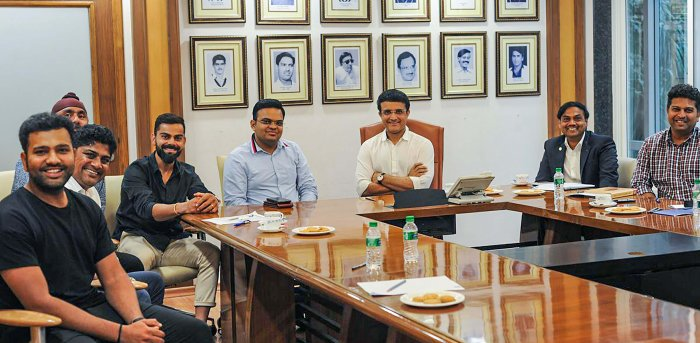

THE BOARD OF CONTROL FOR CRICKET IN INDIA
The Board of Control for Cricket in India is the governing body for cricket in India and is under
the jurisdiction of Ministry of Youth Affairs and Sports, Government of India. The board was
formed in December 1928 as a society, registered under the Tamil Nadu Societies Registration
Act.
In 2012, BCCI established its own production house
Board of Control for Cricket in India, the governing body for cricket in India
BCCI does not depend on the Government of India for its finances and hence is a private
entity
BCCI announced that it will spend ₹ 1,600 crore over the subsequent
one year to upgrade the cricket stadiums around the country.